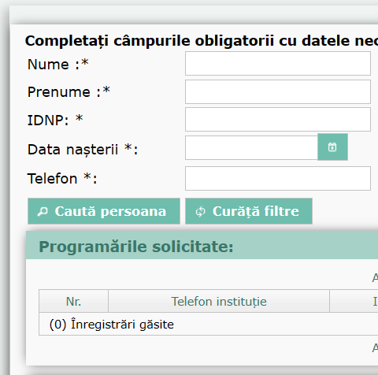

Programare
online
Rezervați o consultație la medicul de familie în doar câțiva pași. Evitați cozile și planificați-vă vizita din confortul casei.

Luni - Vineri: 8:00 - 19:00
Sâmbătă: 8:00 - 13:00
(0231) 7-52-28
Programare
online
Rezervați o consultație la medicul de familie în doar câțiva pași. Evitați cozile și planificați-vă vizita din confortul casei.
Informații utile
Orele de lucru
Luni - Vineri: 8:00 - 19:00
Sâmbătă: 8:00 - 13:00
Centrele de sănătate
Total 10 în orașul Bălți, cât și satele Elizaveta și Sadovoie
Contact
La numărul de telefon: 0231-99-77 sau la secțiunea Contacte